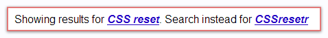

This is another example of why Google sucks (and DuckDuckGo rocks). My previous example of Google suckage was for a query that no one searches for. This time, however, there’s no excuse.
I stumbled across a nicely-presented article about CSS specificity (which, if you use Thesis, is definitely something you should know about), written by a guy named Neal Grosskopf. I’d never heard of this guy before, but his website and content seemed to be of unusually-high quality, so I clicked the link to follow Neal Grosskopf on Twitter and then added him to my list of followees.
Upon clicking the Follow button, I was presented with a recommendation from Twitter that said:
Since you followed Neal G, you might also want to follow: @perishable.
Anyone who reads as much as I do about customizing WordPress would probably associate that name with Perishable Press (a site which I’ve personally learned a LOT from over the years). The man behind @perishable is a guy named Jeff Starr, whom I immediately added to my followees.
Jeff’s Twitter bio says he’s the creator of CSSresetr. Having never heard of CSSresetr before, I copied the text from Jeff’s page, pasted it into Google, and ran a search.
And that’s when Google returned results that were 100% wrong. Not one single result was useful or relevant whatsoever.
Instead, Google assumed that by [CSSresetr], surely I must have really meant [CSS reset], so those were the only results I was shown–along with a link to the real results. So did I click the link that offered me the information I already f@#&ing asked for!? No. I left and went over to a much better search engine, DuckDuckGo, which returned exactly what I was looking for. See below for physical evidence that Google sucks and DuckDuckGo rocks.
[CSSresetr] : Google vs. DuckDuckGo
{kind=link}
{kind=link}
Google Assumes You’re Retarded
Google does not currently offer any way for Users to disable this unwanted behavior:

DuckDuckGo Lets YOU Decide
DuckDuckGo has an incredible selection of customizable settings, including this one:

Comparison Using Corrected Google Results
Even if I click Google’s “I meant what I said” link, DuckDuckGo STILL has better results! Google returns Twitter lists for results 3, 4, and 5…WTF? (I highlighted the common results in blue and evened out the vertical spacing, to make it easier to compare.)

Need a Better
Search Engine?